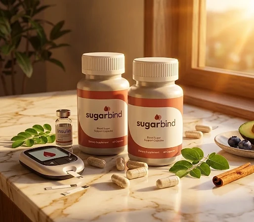
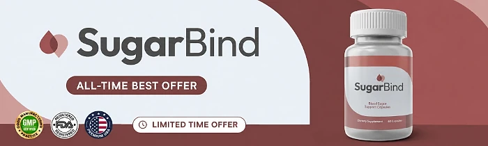

What Is SugarBind And How Does It Work?
SugarBind is a dietary supplement in capsule form designed to support healthy blood sugar levels already within the normal range, metabolic balance, and steady energy for adults who want to address the energy dips after meals, persistent sugar cravings, and metabolic slowdown that can come with age through a natural, dependable approach — without complicated routines or temporary quick fixes.
It utilizes a simple daily capsule that combines Fructo-Oligosaccharides, Apple Cider Vinegar, Cinnamon Bark, and Cayenne Pepper to support a healthy response to meals, a balanced gut, and appetite control, helping the body maintain its natural balance throughout the day.
The ingredients in SugarBind are a prebiotic fiber and three familiar food-derived powders that, according to the official website, cover key pillars of healthy glucose metabolism: the post-meal response, insulin sensitivity support, and a balanced gut, particularly for adults who prefer one simple capsule a day over multiple products or complicated plans.
Rather than acting as a short-lived artificial fix, SugarBind focuses on a gentle, stimulant-free approach, working gradually alongside daily routines to help maintain steady energy, fewer cravings, and long-term wellness.
With consistent daily use, the formula is intended to encourage more stable energy through the day, easier control over cravings, and a gradual sense of balance, especially when combined with a balanced diet, good sleep, and regular exercise.
From a practical standpoint, SugarBind is a daily blood sugar support capsule designed to support wellness from within — helping you stay active, energized, and in control of your health.
Manufactured in the USA with globally sourced ingredients, according to the product label, and produced in an FDA-registered, GMP-certified facility, according to the official website, SugarBind is designed for regular daily use, focusing on safety, purity, and quality for those seeking a natural, non-prescription complement to a healthy lifestyle.
SugarBind Ingredients
Every capsule of SugarBind contains four active ingredients listed on the Supplement Facts panel, each with its amount disclosed — nothing is hidden in a proprietary blend — and chosen to support blood sugar balance, a healthy gut, and appetite control as part of a consistent daily routine:
Fructo-Oligosaccharides (150 mg): A naturally occurring prebiotic fiber that feeds beneficial gut bacteria, supporting satiety and steady energy.
Apple Cider Vinegar Powder (150 mg): A traditional kitchen tonic, delivered as a powder, studied for its potential to support a healthy response to carbohydrate-rich meals.
Cinnamon Bark Powder (75 mg): A Cinnamomum cassia spice studied for its role in supporting a healthy blood sugar response after meals.
Cayenne Pepper Powder (50 mg): A Capsicum annuum fruit whose capsaicin is researched for metabolism, energy balance, and appetite control.
Together, these ingredients work synergistically to support steady energy, fewer cravings, and metabolic balance from within. The other ingredients on the label are a gelatin (bovine) capsule, magnesium stearate, microcrystalline cellulose, and silicon dioxide, so the capsule is not suitable for vegetarian or vegan diets, and the official website describes the formula as non-GMO, gluten-free, and stimulant-free.
SugarBind is designed for daily use, offering a natural, non-prescription approach to supporting blood sugar balance, without stimulants or complicated routines.
SugarBind Side Effects
SugarBind is generally considered well tolerated and is designed for adults of different ages and lifestyles who are looking for a safe, natural, and balanced approach to metabolic wellness, especially those who prefer an easy one-capsule daily routine to support blood sugar balance, energy, and well-being without resorting to risky solutions with severe side effects.
All ingredients used in SugarBind are described on the official website as researched for safety, non-GMO, and stimulant-free, and SugarBind is made in the USA in an FDA-registered, GMP-certified facility, according to the same source, reinforcing consistency, safety, and reliability.
With no widespread reports of serious side effects, SugarBind is generally considered a well-tolerated option. Cayenne pepper and vinegar can bother a sensitive stomach, and the prebiotic fiber may cause mild gas in the first days. More importantly, the official website itself recommends consulting your doctor if you take medication — especially diabetes medications — and a supplement must never replace, or lead you to change, a treatment your doctor prescribed. It is not intended to diagnose, treat, cure, or prevent any disease, and individual results may vary.
According to the label, pregnant or nursing mothers, children under the age of 18, and individuals with a known medical condition should consult a physician before using SugarBind. The same applies to anyone taking prescription medications, ensuring it fits safely within their personal wellness plan.
SugarBind Dosage
The recommended SugarBind dosage is one capsule a day with an 8 oz. glass of water, and it is designed to fit easily into a daily routine, making consistency simple and convenient. Formulated as an easy daily capsule, it requires no powders to mix, no drinks to prepare, and nothing to measure.
The recommended approach, as printed on the label, is to take one (1) SugarBind capsule daily. For best results, the label suggests taking SugarBind 20 to 30 minutes before a meal with 8 oz. of water, or as directed by your healthcare professional, which allows its ingredients to work consistently.
For best results, consistency is key. Each bottle contains 30 capsules, a one-month supply, and because nutritional support for metabolic balance builds gradually, the official website notes that the full benefits typically take four to six weeks of consistent use.
There is no need for complex schedules or multi-step routines. One simple daily capsule is designed to build lasting support gradually alongside a balanced diet, good sleep, and an active lifestyle. The label also advises storing the bottle in a cool, dry place away from heat and light, and not using it if the safety seal is damaged or missing.
As with any dietary supplement, it's important not to exceed the recommended dose and to check the label on your bottle. SugarBind works best when used regularly, combined with proper hydration, balanced nutrition, and healthy daily habits.
SugarBind – Refund Policy
You can order SugarBind with confidence, knowing that every purchase is protected by a 60-day money-back guarantee. This allows you to try the formula and decide if it delivers the support you expect.
According to the returns policy on the official website, you have 60 days from your original order date to request a refund. To obtain it, you must return all bottles — empty, full, or partially full — to the fulfillment center within those 60 days.
How the refund process works: If you decide SugarBind is not right for you, send the bottles back with a written note containing your order ID, your full name and the address where the shipment was received, your email address and phone number, and the original packing slip, if available. It is sensible to use a trackable shipping method and to contact support before sending anything.
Customer Support Contact Information: support@healthyconsumer.us, as printed on the product label. According to the official website, emails are answered within 24 hours, and support is available Monday through Friday, 9 AM to 6 PM EST.
Return Address: The policy lists a PO Box in Ogden, Utah, as the destination for returns; ask customer support to confirm the full address before shipping.
This refund policy is designed to give customers a clear and transparent experience when trying SugarBind.
SugarBind – Where To Buy
SugarBind is sold through its official website, so if you decide to try it, it's important to be careful about where you purchase it. The official website is the only sales channel the manufacturer lists, and it does not point to marketplaces such as Amazon, eBay, or Walmart.
Listings on third-party platforms may look similar but cannot be verified as authentic, raising concerns about safety, quality, and ingredient freshness. Products purchased outside the official source may not be covered by the 60-day guarantee.
For this reason, it makes sense to purchase SugarBind only through the official website. Buying directly from the official source ensures you receive the authentic original product, manufactured in the USA, with access to customer support and the full guarantee. According to the official website, the product is sold exclusively there, and every order is a one-time purchase, with no subscriptions, automatic re-bills, or hidden charges.
To avoid counterfeit batches and ensure maximum quality, always verify that you are ordering from the official SugarBind website before completing your purchase.
To ensure you’re getting the authentic product, most users choose to visit the official website.
Is SugarBind A Scam?
Based on what the official website and the product label disclose, SugarBind does not appear to be a scam. It is a real capsule supplement, sold through an established retailer, and formulated to support healthy blood sugar levels, steady energy, and metabolic balance as part of a consistent routine.
The ingredients used in SugarBind — Fructo-Oligosaccharides, Apple Cider Vinegar, Cinnamon Bark, and Cayenne Pepper — are well known in the wellness field, and the label publishes a full Supplement Facts panel with the amount of each one for transparency.
In addition to its formula, SugarBind is manufactured in the USA with globally sourced ingredients, according to the product label, and the official website frames the formula as support for blood sugar already within the normal range and tells people on diabetes medication to talk to their doctor first.
It is worth keeping expectations realistic: this is a modest, food-based formula, not a treatment for diabetes or prediabetes, and it does not replace glucose monitoring. Results vary from person to person, and no supplement replaces a balanced diet, regular exercise, or medical care.
SugarBind is backed by a 60-day money-back guarantee, and orders are one-time payments with no subscriptions or hidden fees. The return steps and the support hours are published on the official website, which underscores the manufacturer's transparency with customers.
If you're looking for a simple daily capsule to support steady energy, blood sugar balance, and well-being without complicated routines, SugarBind is worth considering — especially when purchased directly from the official website.
For those who want to verify product details or check current availability, the official SugarBind website remains the safest option.
Check Availability On Official Website
